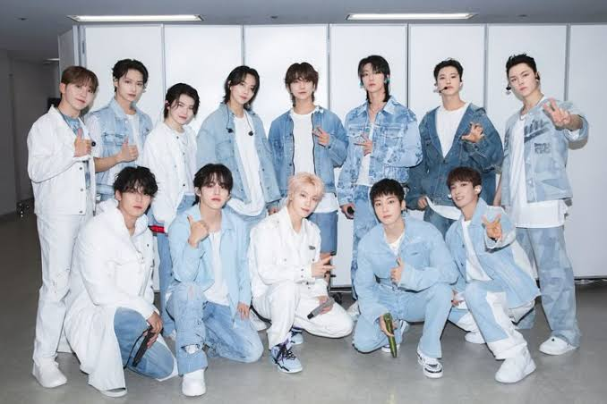
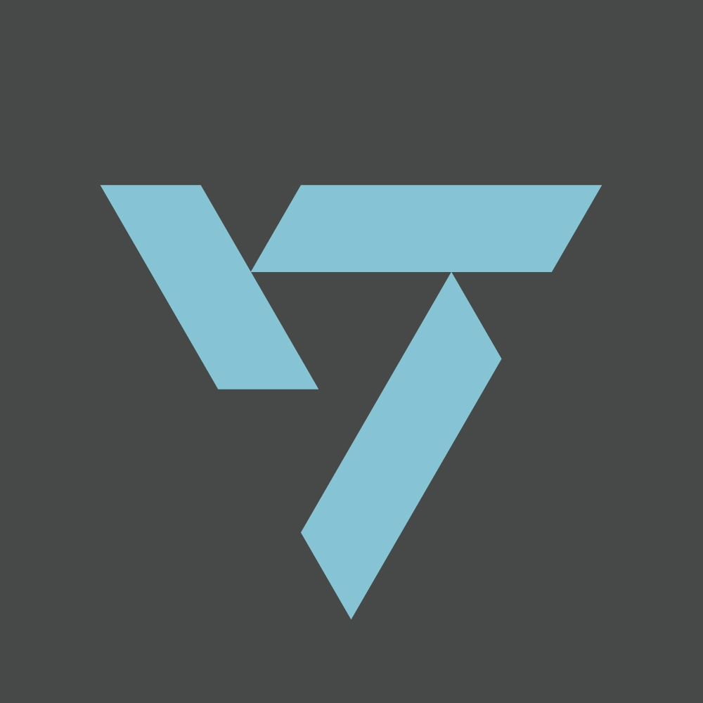
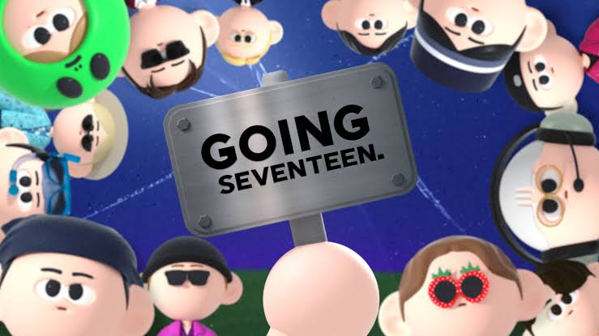
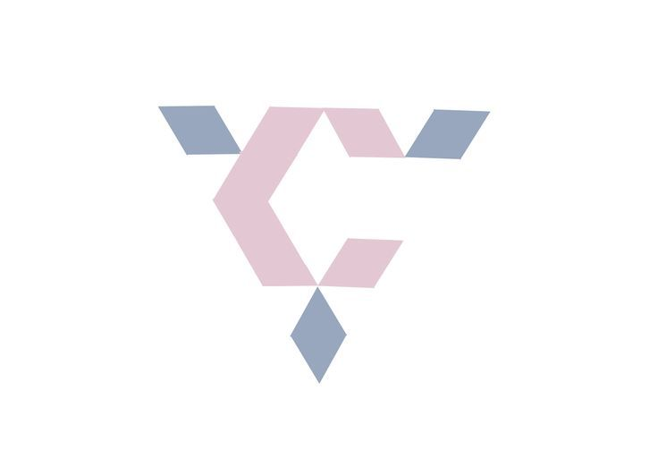
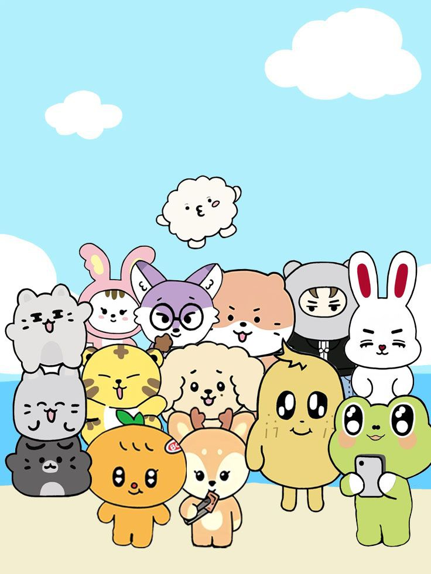

Meu primeiro post
Por: Yasmin M
Boas-vindas ao meu novo blog! Aqui vou compartilhar informações, notícias e tudo sobre o Seventeen
Vou compartilhar informações e notícias sobre o grupo Seventeen

Por: Yasmin M
Boas-vindas ao meu novo blog! Aqui vou compartilhar informações, notícias e tudo sobre o Seventeen

Por: Yasmin M
Formado em 2015, o SEVENTEEN é um dos maiores grupos de K-pop do mundo.
Apesar do nome, o grupo tem 13 membros: S.Coups, Jeonghan, Joshua, Jun, Hoshi, Wonwoo, Woozi, DK, Mingyu, The8, Seungkwan, Vernon e Dino. A conta do nome é simples: 13 membros + 3 subunidades + 1 time = 17.

Por: Yasmin M
O seventeen tem um programa semanal (lançado as quartas-feiras as 9h da manhã) com epsódios de todos os temas possíveis.
Ele começou em 2017, então epsódios é o que não falta, e a risada é garantida!

Por: Yasmin M
O nome que o seventeen deu aos fãs é CARAT, e os carats tem uma data especial, que é dia 14 de fevereiro, que foi quando o fandom foi criado.
A ideia vem da música de debut, que é Shining Diamond. O Seventeen é o diamante bruto, e os Carats são os quilates.

Por: Yasmin M
E o Seventeen, como a maioria dos outros grupos, também tem os seus mascotes, e eles se chamam MINITEENS.
Cada membro tem o seu mascote que foi criado por eles mesmos, desde a estrutura ate o nome.
Cada mascote é único, eles refletem a personalidade, hobbys, expressões e tudo de cada membro.
Existem vários merchandise deles, então se voce quiser pode completar a coleção desses bichinhos fofos!